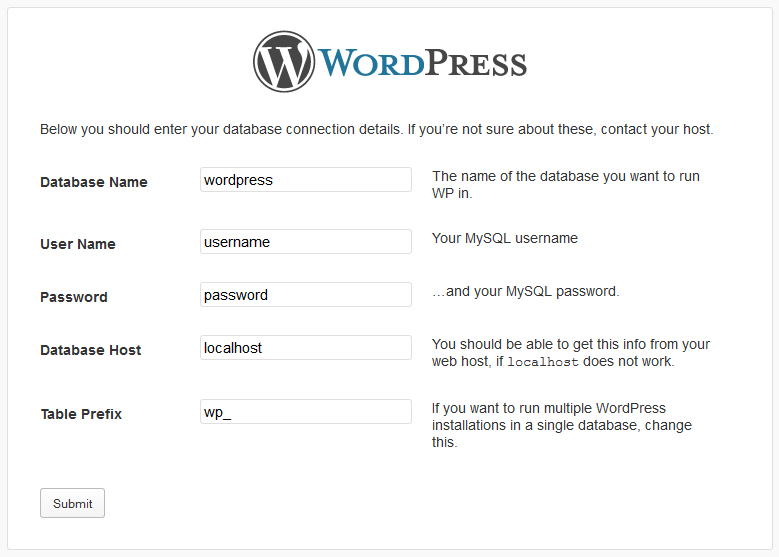
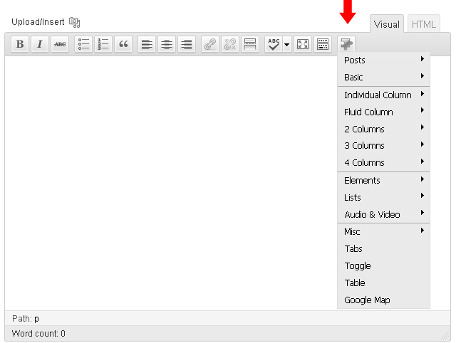
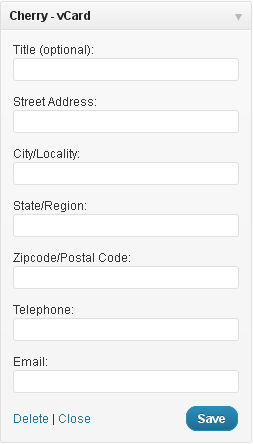

Thank you for purchasing JigoShop template. This documentation consists of several parts and shows you the entire process of setting up and administering JigoShop Website from scratch.
JigoShop template is based on WordPress CMS.
What is WordPress CMS?
WordPress is a free and open source blogging tool and a content management system (CMS) based on PHP and MySQL. It enables you to build Websites and powerful on-line applications and requires almost no technical skills or knowledge to manage. Many aspects, including its ease-of-use and extensibility, have made WordPress the most popular Web site software available. Learn More
What is a JigoShop template
JigoShop template is a skin for website built with WordPress CMS platform. In other words you can easily change your JigoShop Web site appearance installing new template in a few easy steps. With all it's simplicity JigoShop template is provided with all necessary source files and you are free to edit or extend it the way you need.
Files structure
The template package you have downloaded consists of several folders. Let's see what each folder contains :
Documentation - contains documentation files
Documentation (Installation and Editing).html - main documentation file. You are right here :)
Screenshots - contains template screenshots. Not for production
theme####.zip - theme(child-theme) archive. Contains all theme files. Should be installed through JigoShop extension manager
fonts_info.txt - contains links where the template custom fonts can be downloaded
info.txt - contains instructions on how to extract source files
Prepare
Before you proceed to setting up your JigoShop Web site please make sure you are fully prepared. Please complete the following preparation steps:
Editing software
To feel comfortable working with JigoShop template we recommend you to download all applications required. You can see the list of required software at the template preview page. Requirements may vary depending on the template, we're going to tell you in general what’s needed:
First of all you need the right applications to extract the password protected sources_########.zip archive. You can use WinZip 9+ (Windows) and Stuffit Expander 10+ (Mac).
You may also need Adobe Photoshop application. It’s used to edit .PSD source files and it’s necessary if you want to edit template design graphics and images.
To edit template source code files you need some code editor like Adobe Dreamweaver, Notepad++, Sublime Text etc.
To upload files to the hosting server you may need an FTP Manager like Total Commander, FileZilla, CuteFTP etc.
Hosting
As WordPress CMS is a PHP/MySQL based application, you need to prepare a hosting environment to run WordPress.
If you have a live hosting please make sure it matches WordPress software requirements and is ready to be used for WordPress websites.
Otherwise you can run WordPress locally on your computer using the local server. To create a local hosting server please use the localhost applications as WAMP, AppServ, MAMP etc. Any of those can be easily installed as any other program and used to run JigoShop.
Please check the tutorials below on how to configure local development environment:
Download correct WordPress engine version. At the template preview page, in the requirements section you can see the required WordPress version. Please make sure you are downloading the correct one.
The WordPress engine could be downloaded from the official website at WordPress.org Download WordPress. In case you need earlier release you can click the Release Release Archive link.
When you are done with the downloading you need to extract the files from the engine and template packages. To extract the files from the WordPress engine ZIP package you can use any archive manager that can handle ZIP archives.
After extracting the files you need to upload the WordPress engine files and folders to your hosting server.
All these files and folders should be uploaded to your hosting server. The engine files should be uploaded to the PUBLIC_HTML or WWW directory on your server.
If you don’t see PUBLIC_HTML or WWW directories on your hosting server please contact your hosting and specify where to upload the website files.
Please check the following tutorials on how to upload files to server:
In your browser address bar type your domain name/root to the WordPress files and press Enter. This will start the installation procedure.
Creating configuration file. The initial WordPress installation screen will notify you that the configuration file is unavailable. Click Create Configuration File button to create it.
Inserting database details. Here you need to input the WordPress database connection details.

Inserting website details. On the following screen you should input the website details such as:
website title
administrator username and password
website email address
When you are done click Install WordPress button.
If all data has been inserted correctly you’ll see the Success window with the button to LogIn to your WordPress administration panel.
Congratulations! You have successfully installed WordPress CMS.
Plugin Installation
Once the theme is installed and activated, you will need to install its plugins:
In your WordPress admin panel, go to the menu Plugins -> Add New.
Click Upload.
Click Browse.
Navigate to the sources\plugins folder in your template package.
Select of the .zip files in this directory and click Ok.
Click Install Now.
When the plugin is installed, click Activate.
If there are more than one plugin in the /plugins/ folder, repeat the steps to install and activate all of them.
Download:http://JigoShop.org/extend/plugins/jigoshop/ Description: A feature-packed eCommerce plugin built upon JigoShop core functionality ensuring excellent performance and customizability.
AddThis
Download:http://JigoShop.org/extend/plugins/addthis/ Description: The AddThis Social Bookmarking Widget allows any visitor to bookmark and share your site easily with over 330 popular services.
Theme installation
Warning! JigoShop plugin should be installed before the theme installation
Upload via ftp:
Unzip the themeXXXX.zip file to any folder on your hard drive.
Upload the themeXXXX folder to the server (to the /wp-content/themes/ directory).
Upload via WordPress admin:
Login to your WordPress admin panel (add /wp-admin after your domain name in the browser address bar)
ATTENTION: Importing the SQL file to your database will overwrite your existing content and website settings. DO NOT import the SQL file if you want to keep the existing content
NOTE: ALWAYS backup your database before performing any modifications
Please note that the prefix of database tables should be wp_
To make your JigoShop look like our live demo please, follow the instructions bellow.
Then, copy and unzip files from the folder "plugins" to the /wp-content/plugins/ folder or use the admin panel Dashboard > Plugins > Add new > Upload and select your plugin.
Copy "uploads" folder to /wp-content folder.
Open the themeXXXX.sql file that is located in the sources folder with any text editor (preferably Dreamweaver or Notepad) and replace all instances of "your_website_url_here" with your website URL in the entire document using the Find and Replace tool (usually the Ctrl+H hot key). E.g.: http://www.mywebsite.com
Please, make sure that you do not have the forward slash "/" sign at the end of the address.
Save your changes and close the file.
Next, you can import the dump file with the phpMyAdmin tool or some other database management tool.
Permalinks settings
NOTE: Congifure the given settings right after the installation of the theme
In this template the Permalinks are used, the standard paths of http://demolink.org/?p=1 are replaced with http://demolink.org/home. This way of links configuration can be used by not only our blog followers but will help in SEO-optimisation as well. The effectiveness and main features of this link configuration method are revealed here - http://codex.WordPress.org/Using_Permalinks
Please follow the steps below:
Log in to your WordPress Administration Panel (Dashboard).
Click the Settings
That done, click Permalinks
In permalinks settings please select Custom structure, after that copy and past the following settings /%category%/%postname%/
With that done, click the Save changes button.
If you install the theme with the dump.sql file the settings will be configured automatically. However even in this case you still need to save the current settings by clicking Save changes.
Menu setup
WordPress 3.0 comes with a new menu management panel, which makes building your sites navigation very easy and flexible.
Log in to your WordPress Administration Panel (Dashboard).
Click the Post tab
You can choose post format, click radio button in Format box.
Note: Some of these formats have their own options. Options settings will appear below the post editor.
Creating a Product post
Products are essentially custom post types http://codex.WordPress.org/Post_Types#Custom_Types. Which means that they are differ from common posts, such as blog posts, testimonials posts etc. That allows us to manage the content of the site really easy.
You can learn the features of these types of posts at the official website of the Jigoshop plugin. You can also follow this video tutorial to create a simple product.
Creating a product post
Log into your WordPress Administration Panel (Dashboard).
Click the Products tab
Click the Add New tab
Insert your product title.
Upload your image with the help of the Featured Image option (click the Set featured image link)
Under Product Data, choose a Simple product type, and fill in a short Summary of the product
Select the Pricing tab and enter your price and tax options
You can optionally set an Inventory and Attribute. More information on these two options you can find in Product Screen Explained article
And click the Publish button
Creating a Slider post
Slides are essentially custom post types which means that they are different from common posts, such as blog posts, portfolio posts etc. That allows us to manage the content of the site really easy.
Creating a slider post
Log into your WordPress Administration Panel (Dashboard).
Click the Slider tab
And now click the Add New tab
Insert your slider title.
Upload your image with the help of the Featured Image option (click the Set featured image link)
You can use the following fields for your slider:
Caption -a field for slide caption.
URL -a field for slide URL (you can put external link here).
And click the Publish button
Adding a Testimonials post
Adding a Testimonials post
Log into your WordPress Administration Panel (Dashboard).
Click the Testimonials tab
And click the Add New tab
Fill in all the required fields (title, content)
Upload your image with the help of the Featured Image option (click the Set featured image link)
You can use the following fields for this sort of posts:
Name - author's name
URL - author's link
Info - author's additional info
Hit the Publish button
Adding an FAQs post
Adding a FAQs post
Log into your WordPress Administration Panel (Dashboard).
Click the FAQs tab
And now the Add New button
Since it is a question/answer type of post, the title of the post is the question and the content is the answer.
Click Publish
Adding an Our Team post
Adding a Our Team post
Log into your WordPress Administration Panel (Dashboard).
Click the Our Team tab
And now the Add New button
Fill in all the required fields (title, content)
Upload your image with the help of the Featured Image option (click the Set featured image link)
You can use the following fields for this sort of posts:
Position - the position of the person.
Info - an additional info
Click Publish
Adding a Service post
Adding a Service post
Log in to your WordPress Administration Panel (Dashboard).
Click the Services tab
And now the Add New button
Fill in all the required fields (title, content)
Upload your image with the help of the Featured Image option (click the Set featured image link)
Click Publish
Shortcodes
A shortcode is a powerful content building tool http://codex.WordPress.org/Shortcode. Shortcodes are easy to use. First off all, make sure that the editing mode is set to Visual.
Then please click the button for the shortcodes. Then select the shortcode you want to insert.

In this theme the following shortcodes are available:
Basic
Recent Posts - for recent shortcodes with a number of settings.
Recent Testimonials - for recent testimonials
Popular Posts - for the popular posts
Recents Comments - for the recent comments
Tags - for the TagCloud
Grid columns
grid_1
grid_2
grid_3
... - the given shortcodes are used for the layout framework on the basis of 960gs.
Fluid columns
1/2
1/3
2/3
... - the given shortcodes are used for the layout framework on the basis of fluid columns
HTML
Button - the shortcode for the button
Drop Cap - to make the first letter in the paragraph an uppercase letter.
Blockquote - for a quotation
Frame - a wrapper for the image or any other object
Frame Left - a wrapper for the image or any other object with the left side location
Frame Right - a wrapper for the image or any other object with the right side location
Spacer - vertical gap between objects
Horizontal Rule - the horizontal separation line
Small Horizontal Rule - the small horizontal separation line
Alert Boxes
Alert - the Error Box
Approved - the Approve Box
Attention - the Attention box
Notice - the Notice Box
Audio & Video
Audio - insert audio (HTML support)
Video - insert video. Youtube, Vimeo files can be embedded as well as any file located on your server.
Tabs
Shortcode for Tabs
Toggle
Shortcode for toggle-script. With a number of such scripts added you can get Accordion
Jigoshop
Shopping Cart [my_cart] - shows the cart page
The following shortcodes are inserted into pages upon installation and therefore shouldn't be used anywhere else:
[jigoshop_cart] - shows the checkout page
[jigoshop_pay] - shows the checkout pay page
[jigoshop_order_tracking] - shows the order tracking form
[jigoshop_my_account] - shows the user account page
[jigoshop_edit_address] - shows the user account edit address page
[jigoshop_view_order] - shows the user account view order page
The following shortcodes can be used anywhere you want:
[recent_products per_page="12" columns="4" pagination="yes"] - Lists recent products - useful on the homepage. The per page limits the amount of recent products shown, and the columns attribute controls how many columns wide the products should be before wrapping.
[featured_products per_page="12" columns="4" pagination="yes"] - Works exactly the same as recent products but displays products which have been set as “featured".
[jigoshop_category slug="category-name" per_page="8" columns="4" pagination="yes"] - Works the same way as recent products shortcode, but instead it displays the category you input for slug.
[product id="99"] - Show a single product by ID
[product sku="FOO"] - Show a single product by SKU
[products ids="1, 2, 3, 4, 5" pagination="yes"] - Show multiple products by ID
[products skus="foo, bar, baz" orderby="date" order="desc" pagination="yes"] - Show multiple products by SKU
[add_to_cart id="1" sku="1"] - SKU is optional. Returns the add to cart URL for this product
[add_to_cart_url id="1" sku="1" price="no" class="yourClass"] - SKU, Price, Class are all optional. With price set to no, it will only show the add to cart button for this product. With price set to yes, the product's price + button will be displayed.
[product_search] - Displays a search field to search through all products
[on_sale] - Displays all products on sale
Custom Widgets
The following widgets are also used in the theme:
My - Post Cycle
Displays recent posts, you can also display custom posts. The Widget is used for the slideshow because of Cycle plugin in its structure. The given widget contains the following options:
Title: - Widget Title
Limit Text: - the number of words in the brief post description.
Posts per page: - the number of posts to display.
Post Type: - a Post Type selection.
My - Recent Posts
Displays recent posts. You can also show custom posts of certain categories and add a read more link. The given Wdiget contains tge following options:
Title: - Widget Title
Category Slug: - Post Category Slug.
Post Format: - Choose Post Format for displaying posts.
Posts per page: - the number of posts to display.
Link Text: - the Link Text that is displayed after the Recent Posts.
Link Url: - Link URL that is displayed after the Recent posts.
My - Recent Products
Displays products. These Widgets have the following options:
Title: - Widget Title
Count of Products: - the number of products to display.
Show post thumbnail - show thumbnail for a post
Width: - Image Width
Height: - Image Height
Product name excerpt length(chars): - the number of characters in product title to display.
Show product description: - show/hide product short description.
Show product rating: - show/hide product rating.
My - Brands
This is the Widget that allows you to show set of banners. The widget contains the following options:
Title: - Widget Title
Show brand thumbnail - show or hide brand thumbnail.
Brand thumbnail width - width of brand thumbnail.
Brand thumbnail height - height of brand thumbnail.
Show brand name - show or hide brand name.
Select brands: - select brand names to show.
My - Featured Products
Displays products. These Widgets have the following options:
Title: - Widget Title
Count of Products: - the number of products to display.
Show post thumbnail - show thumbnail for a post
Width: - Image Width
Height: - Image Height
Show product description: - show/hide product short description.
Show product rating: - show/hide product rating.
My - Request a Quote
An advanced text widget with a whole lot of extra fields. The given Widget contains the following fields:
Title: - Widget Title
Text: - Widget Text.
Button Text: - Button Text
Button URL: - Button URL
My - Advanced Cycle
The multifunctional widget used to display different post types including the blog posts, as well as the functionality of settings display. The given widget contains the following options:
Title: - Widget Title
Posts type: - select Posts type
Number of posts to show: - the number of posts
Select only featured products - show featured products
Select only products on sale - show products on sale
Show product price - display product price
Show product rating - display product rating
Sort by: - Post selection option
Reverse sort order (ascending): - reverse sort order
Show number of comments - show the number of comments
Show meta - show meta
Container class: - row class. Set to featured_custom_posts by default
Show post title - show post title.
Date as title - for date usage instead of the title
Before title: - custom HTML-markup before Title
After title: - custom HTML-markup after Title
Show post excerpt - show excerpt
Excerpt length (words): - excerpt length (the number of words)
Excerpt as link - convert excerpt into a link
Show "More link" - show link More link after the post
Link text: - Link Text
Link class: - CSS-class for the link More link
Show post thumbnail - show thumbnail for a post
Width: - Image Width
Height: - Image Height
Thumbnail as link - convert the image into a link
Show global link to all posts - Show global link to all posts
Link text: - the text of the given link
Link URL: - Link URL
Link class: - CSS-class for the link
My - Social Networks
This is the Widget that allows linkage to your social network accounts. The widget contains the following options:
Title: - Widget Title
Facebook URL, Twitter URL, Flickr URL etc. - the links to your Social Network accounts
Display: the way of icons display.
Icons - icons only.
Labels - text only.
Both - icons and text.
My - Banners
This is the Widget that allows you to show set of banners. The widget contains the following options:
Title: - Widget Title
# banner path: - path to your banner image.
# banner link: - path to your banner link.
My - Flickr
This is the Widget that displays photos from your flickr gallery. The widget contains the following options:
Title: - Widget Title
Flickr ID: - your flickr ID
Images count: - amount of photos to show.
Link Text: - text of link under flickr photos.
My - Carousel
This is the Widget that displays different kind of posts from your site. The widget contains the following options:
Title: - Widget Title
Limit Text: - the number of words in the brief post description.
Posts per page: - the number of posts to display.
Post type: - choose prefered post type (e.g. blog, testimonials).

My - vCard
This is the Widget that displays information about your company or about you. The widget contains the following options:
Title (optional): - Widget Title
Street Address: - put your street address here
City/Locality: - enter your city or locality here
State/Region: - enter your state or region here
Zipcode/Postal Code: - enter your zipcode or postal code here
Telephone: - telephone number
Email: - your email
Theme Options
The following theme contains the Settings option. These settings allow you to change of theme’s color palette, order of items, turn items on/off and do lots of other things. In order to use these settings, please go to Appearance → Theme Options.
Body styling - you can select the body color and the background pattern.
Header background color - Header background color
Buttons and links color - Buttons and links color
Body Text - You can choose your preferred font for body text. There are following options available for editing the fonts:
Font size
Line height
Font Family
Font style (normal, bold, italic)
Character Sets (Latin, Greek, Cyrillic etc.)
Color
Note: Font marked with * means that it will be loaded from the Google Web Fonts library.
H1-H6 Headings - You can choose your preferred font for headings and titles. There are following options available for editing the fonts:
Font size
Line height
Font Family
Font style (normal, bold, italic)
Character Sets (latin, greek, cyrillic etc.)
Color
Note: Font marked with * means that it will be loaded from the Google Web Fonts library.
Display search box? - show/hide the search bar in the header
Display Login and Register links? - show/hide the links in the pages
Custom CSS - if you need to add some CSS rules, but you don't want to mess with the main css file, you can use this field. Just insert your new css rules
Logo & Favicon
What kind of logo? - indicates what kind of logo to use, whether the text one or the image logo.
Logo URL - with Image logo selected you can upload the new image with the help of the 'upload' feature or use any pic from
Favicon - you can upload the new favicon with the help of the 'upload' feature or use any pic from the Media Library.
Navigation
Delay - delay in milliseconds that defines when the menu hides
Fade-in animation - enable/disable the fade-in animation
Slide-down animation - enable/disable the slide animation
Speed - the speed of the submenu expanding
Arrows markup - enable/disable arrows for the menu items that have submenus


{kind=link}

{kind=link}